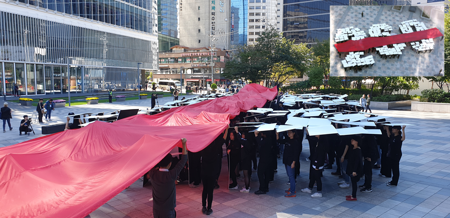
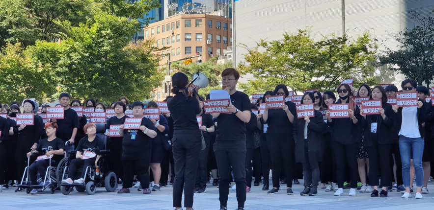
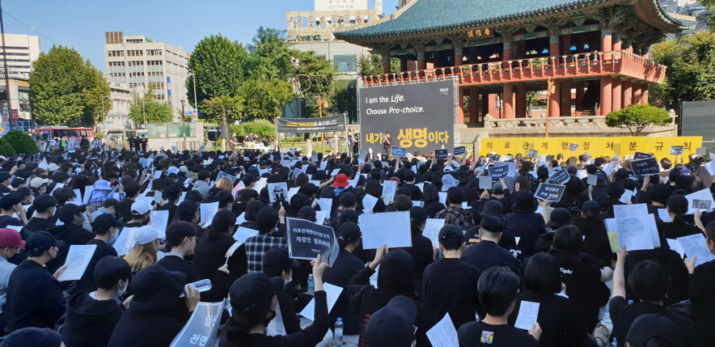
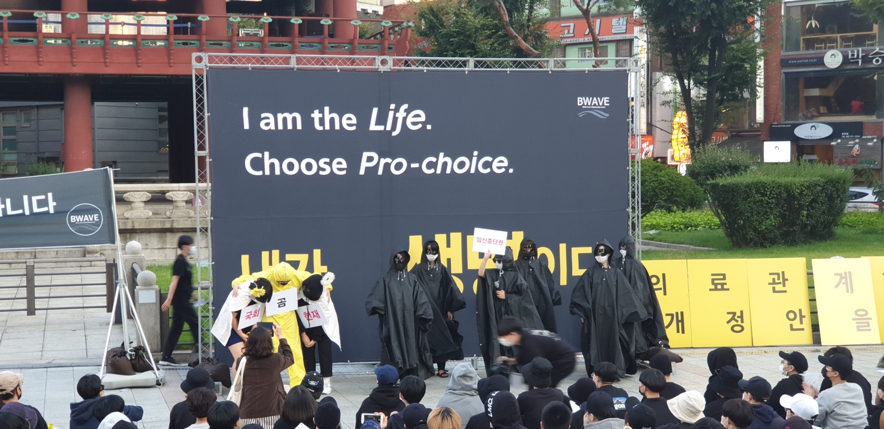

헌법재판소의 낙태죄 위헌소원 사건 선고를 앞두고 위헌결정을 촉구하는 두 집회가 같은 날 도보 5분 거리에서 잇따랐다. 지난 9월 29일 21개 여성단체 연합체 ‘모두를 위한 낙태죄 폐지 공동행동(모낙폐)’은 서울 중구 청계천 한빛광장에서 269인 피켓 퍼포먼스를, 익명의 여성 모임 ‘비웨이브(BWAVE)’는 서울 종로구 보신각에서 제17차 시위를 주최했다.
모낙폐는 ‘안전하고 합법적인 임신중지를 위한 국제 행동의 날(9월 28일)’을 기념해 낮 12시부터 낙태죄 폐지 퍼포먼스를 진행했다. 흰 피켓을 든 시민 269명이 형법 제269조를 상징하는 숫자 269를 만들자 ‘조항 삭제’를 의미하는 붉은 천이 대열을 가로질렀다.

세 차례의 리허설 끝에 오후 1시께 시작된 퍼포먼스에서 붉은 천을 든 시민 및 활동가들이 269개의 피켓을 가로지르고 있다. 우측 상단의 사진은 공중에서 촬영된 공동 취재 사진이다.
모낙폐 정책교육팀의 나영 활동가는 “현행 형법 제269조는 임신중지를 한 여성이 1년 이하의 징역 또는 200만 원 이하의 벌금에 처하도록 규정한 악법”이라며 “사회적 책임을 방기하고 여성을 처벌하는” 낙태죄의 위헌결정과 폐지를 촉구했다. 참가자들은 “안전하고 합법적인 임신중지 보장하라”, “낙태죄는 위헌이다”, “낙태죄를 폐지하라” 등 구호를 따라 외쳤다.

모낙폐 정책교육팀의 나영(지구지역행동네트워크 집행위원장) 활동가가 ‘낙태죄를 폐지하라’라는 구호가 적힌 피켓을 들고 퍼포먼스 참가자들을 대표해 선언문을 낭독하고 있다.
퍼포먼스가 끝난 뒤에는 낙태죄 폐지를 시작으로 장애와 질병, 성 정체성과 성적 지향, 경제 상황에 관계없이 성적 자기결정권과 재생산권을 보장할 것을 요구하는 선언문 낭독이 이어졌다. 남성 및 시민단체 참가자들도 동석한 가운데 오후 1시 반께 행사가 종료되었다.
같은 날 보신각에서는 오후 2시부터 6시까지 제17차 임신중단 전면 합법화 시위가 열렸다. 2016년 10월부터 시위를 주도해 온 비웨이브의 집회는 여성만 참여 가능하며 개개인 여성들의 목소리를 소중히 하고자 운동권 및 단체와 연합하지 않는다.

비웨이브 시위 중 자원자가 무대에서 구호를 선창하자 다른 참가자들이 따라 외치고 있다.
주최 측은 “내가 생명이다”, “낙태죄 위헌결정을 촉구한다”, “의료관계 행정처분 규칙 개정안을 철회하라”를 골자로 구호문과 세 가지 퍼포먼스를 준비했다. 세포는 생명이 아니라는 취지에서 달걀과 임신 7주차 배아 크기인 7mm 해바라기씨 초콜릿을 던지는가 하면, 짧은 연극으로 여성의 임신중단권을 외면하는 정부의 남성 권력을 풍자하기도 했다.

비웨이브는 “6년 만의 헌법재판소 심리에서 위헌 결정이 나지 않을 경우 기존 법령에 의료관계 행정처분 규칙 개정안까지 더해져 여성의 자기 결정권과 건강권이 극심하게 침해된다”고 비판하며 문재인 정부가 국회, 헌법재판소와 함께 여성의 임신 중단권을 외면하는 모습을 퍼포먼스로 표현했다. ‘문’을 뒤집어 ‘곰’이 된 문 대통령 역의 참가자는 “남자만 사람”이라고 말했다.
비웨이브 언론 홍보 담당자는 “지난 시위부터 임신중단 수술을 비도덕적 진료행위에 포함시킨 문재인 정부와 보건복지부를 직접적으로 비판하기 시작했다”며 “오후 3시 기준 1500명이 모였다”고 밝혔다. 이날 주최 측 추산 최종 인원은 2000명으로, 16차 3000명에 이어 역대 두 번째로 많았다.